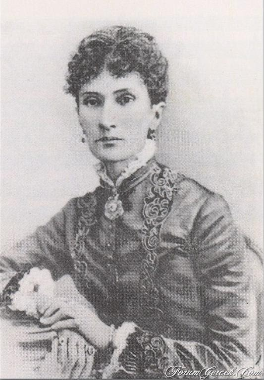
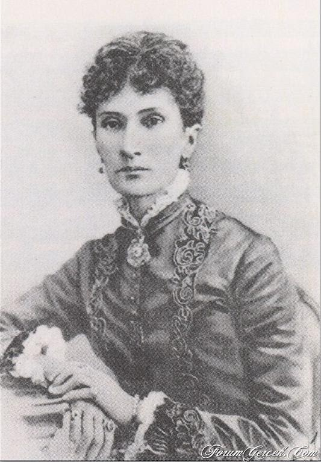

Московско-Рязанская железная дорога
В 1858 году "с высочайшего повеления Его Императорского Величества соизволения" было разрешено производить изыскания к устройству железной дороги от Москвы до Саратова. Проектов было два. Выбор пал на левый берег Москвы-реки, более ровный, со сравнительно небольшими речками. Для развития Малаховки весьма важное значение имело открытие Рязанской железной дороги. После открытия движения стало развиваться дачное строительство. В 1880 году открылась пассажирская остановка дачных поездов на 27-й версте, которую назвали Малаховкой по имени ближайшего населённого пункта, Соколово-Малахово, от которого дорога прошла в одной версте.

Платоформа Малаховка
Многие ключевые для Малаховки события или начинались с инициативы железнодорожных служащих или не обходились без их участия.
Железнодорожники-жители Малаховки:
- Горлицкий Валерий (Воспитанник детдома № 12 МДГ. Окончил Институт железнодорожного транспорта. Инженер. Был начальником Киевской железной дороги.)
- Гомзелев (железнодорожный рабочий-революционер; его упоминает Протоклитов)
- Есаков Александр Семёнович
- Козлов Василий Кириллович
- Кошелёв Николай Иванович – начальник платформы «Малаховка» (занимал эту должность в 1918 году; его упоминает Протоклитов)
- Кравец (архитектор; его упоминает Куршевиц)
- Поликарпов (инженер; его упоминает Куршевиц)
- Соколовы Пётр Иванович и Наталия Ивановна
- Чебышевы
 
